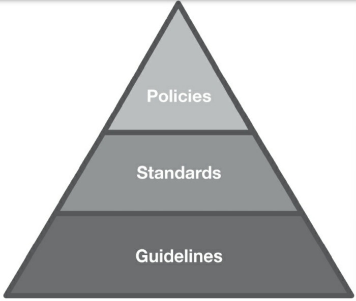

Framework vs Standard vs Policies
• Depth and Breadth
◇ Some go far and wide whereas others are narrow and deep
• Flexibility
◇ One standard might apply across the organisation whereas another might me limited to specific department or team
• Reasoning
◇ Some standards provide stronger guidance about what they make a particular statement
• Prioritisation
◇ Each organisation determines acceptable risk, some standards provide guidance for focusing on certain areas
• Industry Acceptance
◇ Some standards are generally accepted more than others
• Framework should offer IT organisation a method for establishing an approach to managing IT risks
• The use of framework combined with analysis of risk helps guide the development of appropriate writtenpolicies and standards within the organisation
• For eg,
◇ System should be protected from unauthorised access
◇ As a result, organisation develops certain policies that pertain to enforcing authorised access to systems
◇ One policy states that individuals are assigned unique user name and passwords for the system
◇ Standard may dictate specific parameters for eg,
◇ Usernames must follow the format of first initial preceded by last name
◇ Procedure indicates how to apply the requirements on particular system
